OpenDAMN: Quick Manual
Version 0.1.0 · A manager for DAMN menus in SimCity 4 · Screenshots from a real install with about 57,000 plugin files
OpenDAMN replaces DAMN Manager and SSPTool. It reads and writes the same files, so the menus you already have keep working. This manual is a short tour. Features marked New were not in the original tools. Numbered yellow boxes on each screenshot match the numbered notes below it.
- Getting started
- The main window
- Hiding lots from the game's menus
- Sub-menu report New
- Health check and statistics New
- The DAMN menu at a glance
- Finding lots
- Editing menus
- Adding network items
- Installing and configuring DAMN
- Settings and colours
- Keyboard shortcuts
1. Getting started
You need Java 21 or newer. Start the program with java -jar OpenDAMN.jar,
or use OpenDAMN.sh (Linux/macOS) or OpenDAMN.bat (Windows).
- Finds the game for you New. Normal, Wine and Proton installs are detected at the first start. To change the folders later, use .
- Fast plugin index. The first scan reads every plugin file. Later scans only read files that changed, so they take about a second. Use F5 () after you install new plugins.
- Nothing is written until you save (Ctrl+S). The title bar shows when you have unsaved changes. Each save makes a backup of your menus first.
2. The main window
The top half shows what is installed: your plugin folders, the lots in them, and details of the selected lot. The bottom half shows your DAMN menus: the menu tree, the items in the selected menu, and details of the selected item.
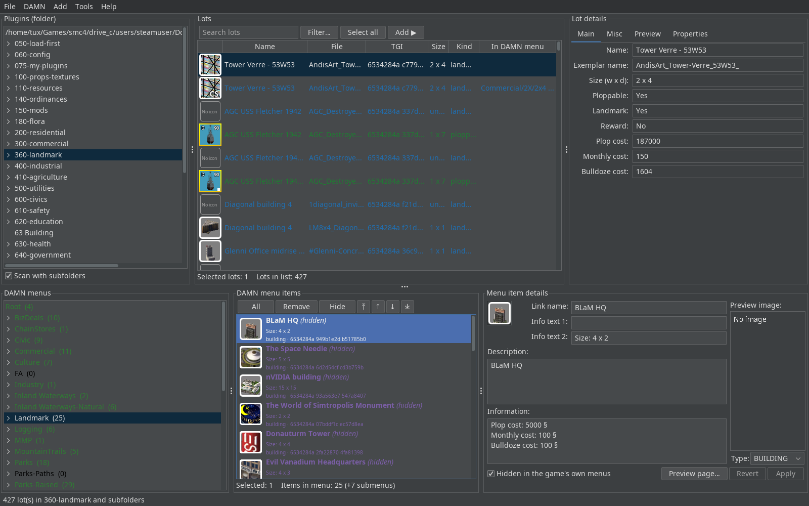
- Search and filter. Type to filter the lot list. Filter… limits it to a category. Add ▶ puts the selected lots into the menu you selected below.
- "In DAMN menu" column. Shows the DAMN menus that already contain each lot, so you can spot duplicates and lots you have not filed yet.
- Lot details. The Properties tab lists every exemplar property with its name (see Finding lots).
- Colour-coded menu tree. The number after each name is its item count. The colour tells you whether the menu is empty, has lots, or is over the item limit. You can change the colours in Settings.
- Hide button. Removes the selected items from the game's own (Maxis) menus. They stay in your DAMN menu.
- Hidden items are purple and marked (hidden).
- Hidden checkbox for the selected item. Click Apply to keep the change and Revert to undo it.
3. Hiding lots from the game's menus
A hidden lot disappears from the game's own building menus. You can still place it from your DAMN menu. OpenDAMN writes copies of the lot data into a hidden-lots folder. That folder loads after all your other plugins, so the copies take priority. Your original plugin files are never changed.
- Always rebuilt from the original files New. Each save rewrites the hidden folder from your current plugins. Old copies never pile up. When you unhide a lot, its copy is removed.
- rewrites the folder right away, for example after you update a plugin.
- New warns you if another folder loads
after the hidden folder. A name like
~Documentssorts afterz, so it would load later and override the hidden copies. - To hide or unhide a whole branch of the tree, right-click a menu and choose Hide lots (with submenus).
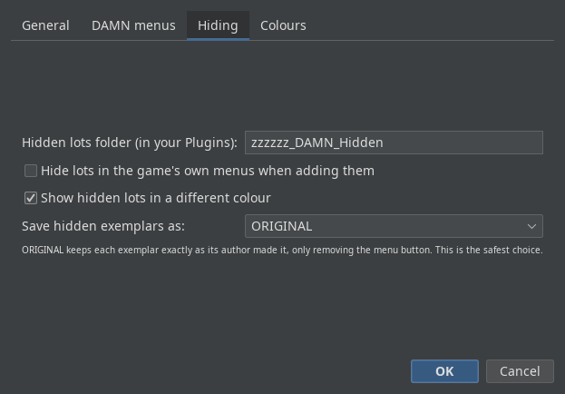
- The name of the hidden-lots folder inside your Plugins folder. If you already have one, OpenDAMN finds it.
- ORIGINAL format keeps each lot exactly as its author made it. Only the menu button is removed. This is the safest choice.
4. Sub-menu report New
Do you use the Submenus DLL or SC4ResourceLoadingHooks? Then shows how your hidden lots and the game's sub-menus affect each other. The report only reads files. Unhiding changes your DAMN menus only. No third-party plugin is ever changed.
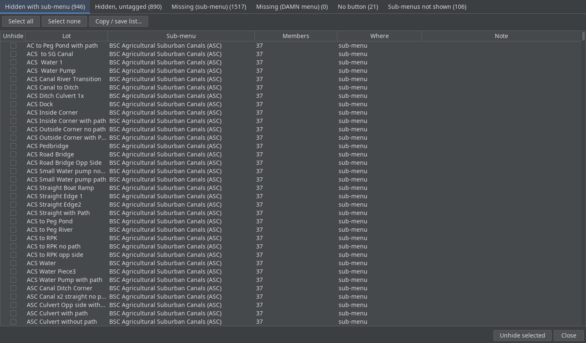
- Six tabs, each with a count:
Tab Meaning Hidden with sub-menu Hidden in DAMN, but still listed in a sub-menu Hidden, untagged Put in a sub-menu by a patch, with no sub-menu tag of its own Missing (sub-menu) A sub-menu lists it, but no installed plugin provides it Missing (DAMN menu) A DAMN menu lists it, but no installed plugin provides it No button In a sub-menu whose button no plugin provides Sub-menus not shown Sub-menus the game will not display, and why - Tick the lots you want back in the game's own menus.
- Copy any list to the clipboard or save it as a text file.
- Unhide selected unhides the ticked lots. You confirm first, and nothing is written until you save.
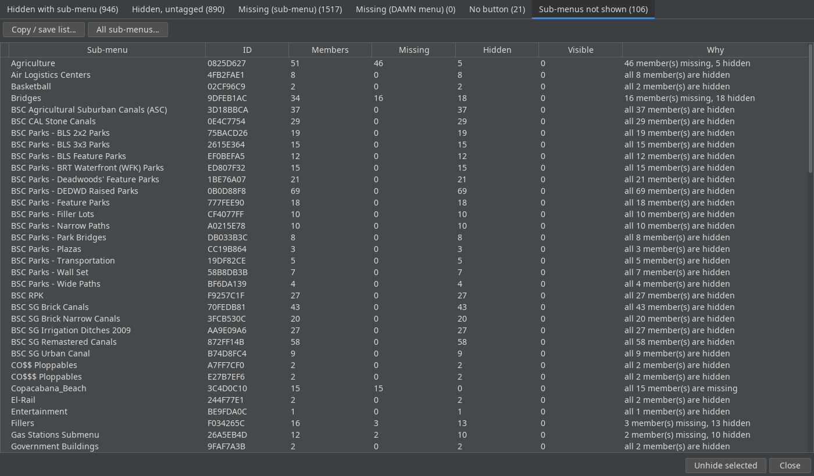
- For each sub-menu: how many members it has, and how many are missing, hidden or visible.
- Why it is not shown. If all members are hidden, the sub-menu will not appear in the game. The Submenus DLL's own log cannot show this, because it counts the hidden copies as content.
5. Health check and statistics New
looks for problems before they reach the game. It checks for a missing or second copy of the DAMN engine, menu files in the wrong place, duplicate menu file names, an out-of-date index, menus over the limit, entries whose lot is not installed, and a hidden folder that does not load last. It only reads files. gives a summary of your whole setup. You can copy or save both reports.
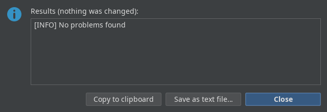
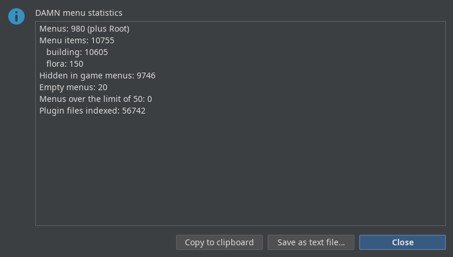
- Counts of hidden items, empty menus and menus over the limit.
New cleans up after you uninstall plugins. It moves menu entries whose lot is gone into an archive folder outside the game. They are not deleted, so you can bring them back.
6. The DAMN menu at a glance
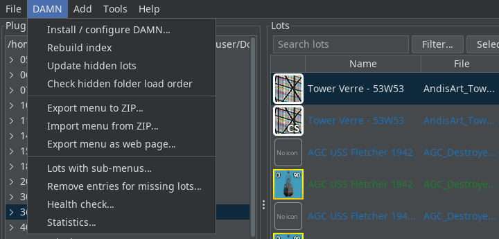
7. Finding lots
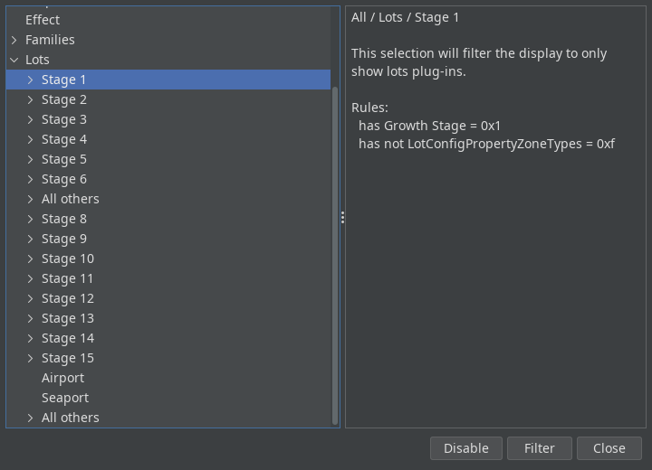
- Pick a category on the left. The right side explains the rule it uses. These rules use the
community
new_properties.xml. Disable shows all lots again.
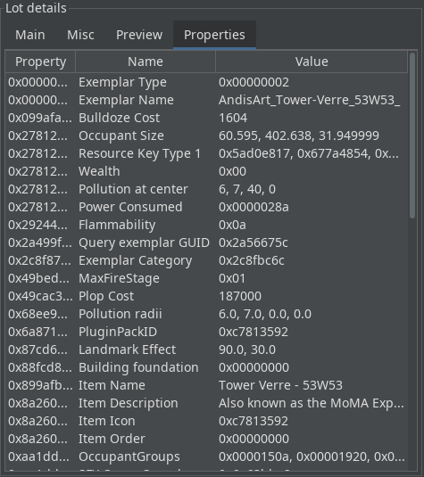
- The Properties tab lists every property of the selected lot with its name. You do not need a separate DAT editor to check a value.
8. Editing menus
Drag lots from the lot list onto a menu, or select a menu and click Add ▶. You can also drag items between menus. Most other actions are on the right-click menus.
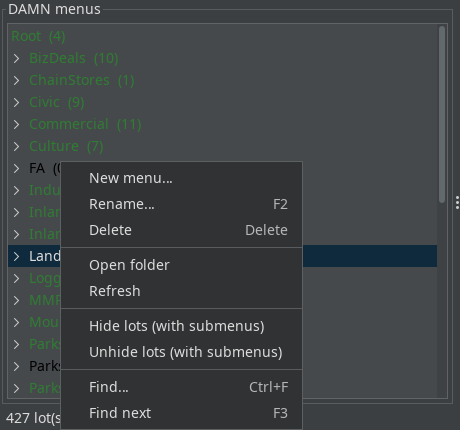
- Hide or unhide every lot in this menu and all of its sub-menus at once.
- Find a menu by name (Ctrl+F, then F3 for the next match).
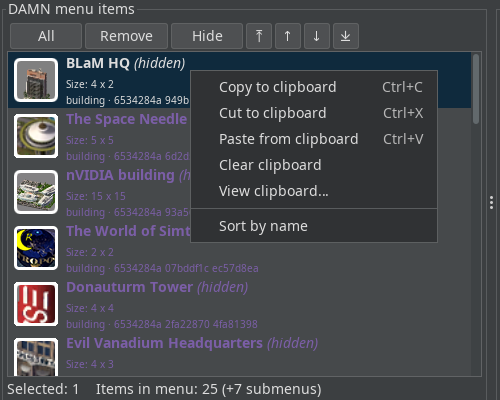
- Cut, copy and paste items between menus. View clipboard… shows what you are about to paste.
- Sort the menu alphabetically. The arrow buttons above the list move items up and down, or to the top and bottom.
9. Adding network items
puts road, rail and highway tools into a DAMN menu. does the same for the Maxis buildings.
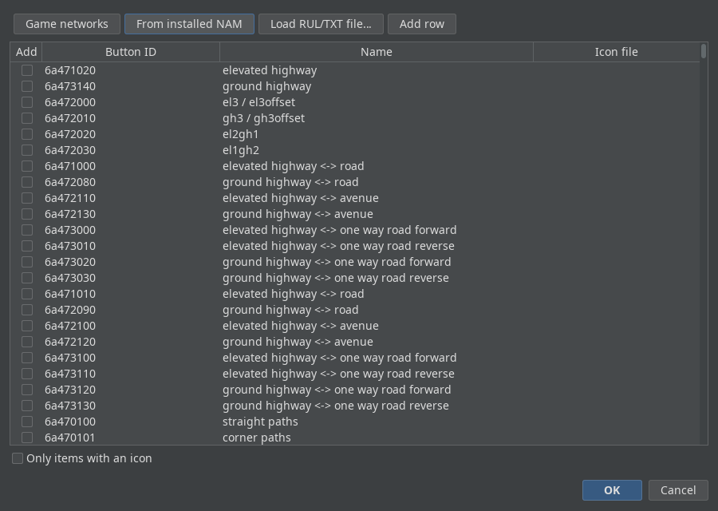
- Choose where the list comes from: the base game, your installed NAM (shown here), or a RUL/TXT file. You can also add a row by hand. Tick the items you want and click OK.
10. Installing and configuring DAMN
installs the DAMN plugin, or changes the size and layout of the in-game menu window. Your existing engine files are backed up first.
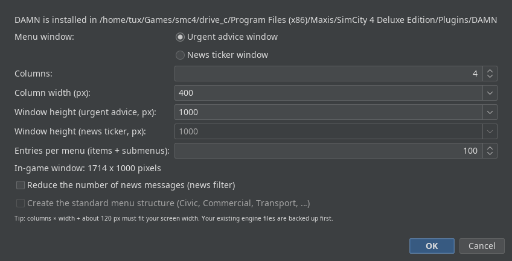
- Columns, column width, window height and the number of entries per menu.
- The final in-game window size, updated as you type. It must fit your screen.
11. Settings and colours
Open (Ctrl+,). The tabs are General (item template, light or dark theme), DAMN menus (item limit, where new items go), Hiding (section 3) and Colours.
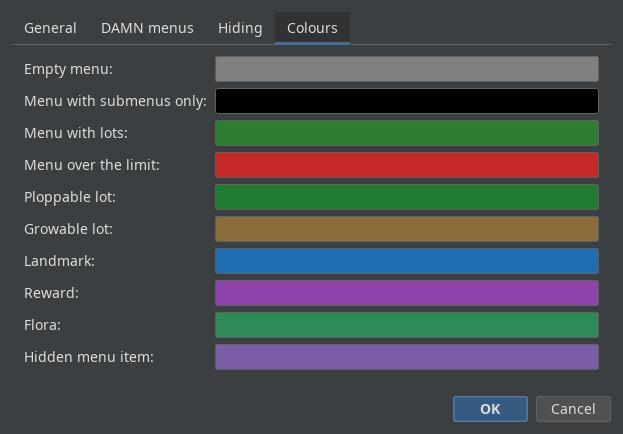
- Colours in the menu tree: empty, sub-menus only, has lots, over the limit.
- Colours in the lot list for each kind of lot.
- The colour for hidden menu items.
12. Keyboard shortcuts
| Key | Action |
|---|---|
| Ctrl+S | Save all changes to the game |
| F5 | Rescan plugins (only changed files) |
| Ctrl+F / F3 | Find a menu / find next |
| F2 | Rename the selected menu |
| Ctrl+C / X / V | Copy / cut / paste menu items |
| Ctrl+L | Log viewer |
| Ctrl+, | Settings |
| Ctrl+Q | Exit |
OpenDAMN is free software under the GNU GPL v3 or later.
DAMN by Daeley. SSPTool by Stefan Wertich. DAMN Manager by Yildun. new_properties.xml by memo33.
SimCity 4 is a trademark of Electronic Arts. This project is not affiliated with EA or Maxis.